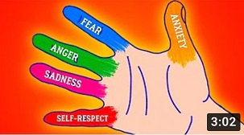
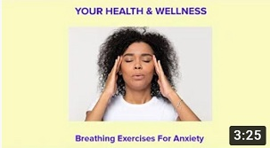

Articles
Faking emotions: The Downside
The adage "Fake it until you make it" -- the idea that someone can fake a positive attitude to elicit real-life benefits -- often backfires when used with co-workers.
Deal with negative emotions
Negative emotions can be described as any feeling which causes you to be miserable and sad. These emotions make you dislike yourself and others, and reduce your confidence and self-esteem, and general life satisfaction.
Love Yourself
No one is ever going to love you more than you love yourself. In other words, until you're 100 percent into YOU, no one else will be.
Overcome Loneliness
Usually I could keep a positive attitude and project the appearance was all okay, but truth be told, I was a very lonely person back then.
Meditation helps
For many of those looking to “keep calm” and de-stress, meditation might just be the ideal solution. Meditation practices vary widely around the globe
Exercise
Videos
-

Tufts Medical Center
15 July 2020Tufts University is an American private research university on the border of Medford and Somerville, Massachusetts. It was founded in 1852 as Tufts College by Christian universalists who sought to open a nonsectarian institution of higher learning
-

Five Fingers
17 July 2020People who experience anger and depression may suppress their feelings of anger. Alternatively, they may be more likely to display their anger through aggression or even violence toward a loved one, such as a spouse.
-

Breathing Exercise
20 July 2020The way you breathe affects your whole body. Breathing exercises are a good way to relax, reduce tension, and relieve stress.You can do different exercises to see which work best for you.
-
Calm Piano
23 July 2020People who play the piano tend to experience less anxiety and depression than their nonmusical counterparts. Playing for a few minutes a day can improve self-esteem, make you feel more positive, and can lower your blood pressure.
-
Brain - Calming Music
25 July 2020Upbeat music can make you feel more optimistic and positive about life. ... A slower tempo can quiet your mind and relax your muscles, making you feel soothed while releasing the stress of the day. Music is effective for relaxation and stress management.
-
Classical Relax
27 July 2020Classical music can be a powerful tool for relieving everyday stress, helping you sleep and supporting your mental health. Allow us to recommend the best classical music for relaxation. It's scientifically proven that listening to music can lower blood pressure, induce relaxation and reduce anxiety.